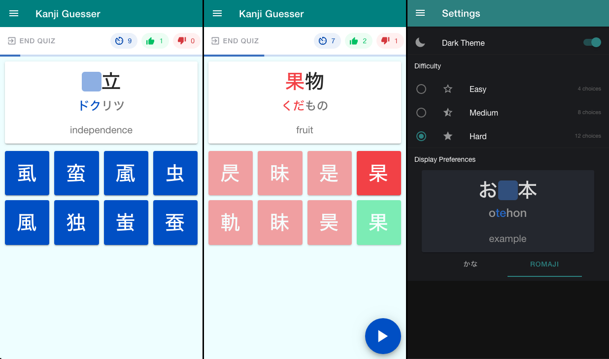
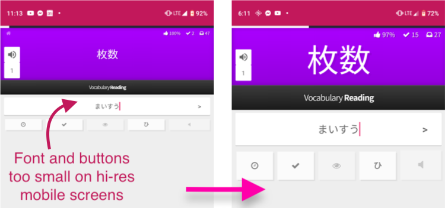
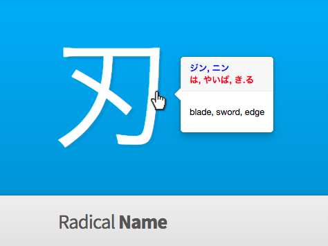
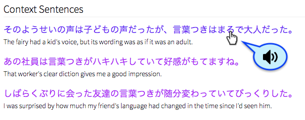

Hello, World!
I'm Rob.
I’m a senior full-stack software engineer, web developer, project owner, and team leader with a focus on intelligent design. I’ve worked on projects of all sizes, from SPAs to full-scale enterprise software servicing more than 16,000 users. I am also an avid fan of Japanese language, culture, and foreign exchange with 2 years of experience working in Japan as an English teacher.
Projects
See more of my work on GitHub.
Kanji Guesser App
Ionic App Kanji Guesser is an Ionic 4 React cross-platform app that assists Japanese language learners with kanji recognition and retention. It prompts the user with a series of flashcards where they must choose the correct kanji character from a set of similar-looking ones.

WaniKani Enhanced Mobile Design
Userscript Overwrites existing mobile viewport CSS stylings of wanikani.com in review and lesson mode, making the site more mobile-friendly.

WaniKani Clickable Popover & Study Assistant
Userscript On WaniKani reviews and lessons, shows reading & translation info in a popover when hovering over quiz kanji/vocab words. Also provides a clickable link to jisho.org for the relevant quiz item.

WaniKani Audio for Japanese Example Sentences
Userscript Adds audio talkback support in male and female Japanese voices to example sentences on WaniKani lessons and reviews.

Résumé
Please contact me if you wish to see my Japanese résumé.
日本語の履歴書については、ご連絡して下さい。
Download my English résumé here.